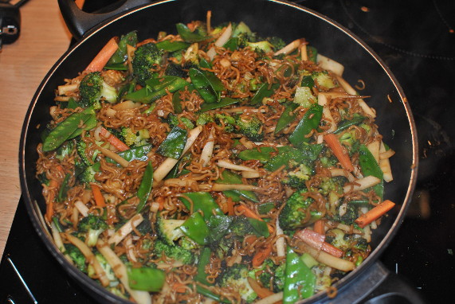

Bratnudeln "Takeaway"

- Zubereitung: ca. 30 Minuten
- Für 4 Personen
Zutaten
- 10 g Ingwer
- 100 ml Sojasauce
- 2 EL flüssiger Honig
- 5 EL trockener Sherry
- 150 g Knackerbsen (ersatzweise Zuckerschoten)
- 150 g Brokkoli
- 1 Möhre
- 1 Petersilienwurzel
- 200 g Quick-Cooking-Nudeln
- 1/2 Bund Schnittlauch
- 5 Stängel Koriander
- 1 Knoblauchzehe
- 5 EL Öl
Zubereitung
- Für die Sauce den Ingwer schälen, in feine Scheiben schneiden und mit Sojasauce, Honig und Sherry aufkochen.
- Knackerbsen putzen und schräg dritteln. Brokkoli putzen und in feine Röschen teilen. Möhre und Petersilienwurzel mit dem
Sparschäler erst schälen, dann in feine längliche Streifen hobeln.
- Nudeln in kochendem Wasser 4 Minuten bissfest garen, in ein Sieb gießen, unter fließendem kalten
Wasser abschrecken und abtropfen lassen. Schnittlauch in Röllchen schneiden, Koriander grob hacken.
- Knoblauchzehe schälen und fein würfeln. 2 EL Öl in einem Wok oder einer großen beschichteten Pfanne bis zum
Rauchpunkt erhitzen. Brokkoli darin 3 Minuten braten. Knackerbsen, Möhre, Petersilienwurzel und
Knoblauch zugeben. Weitere 2 Minuten unter Rühren braten.
- Gemüse aus dem Wok oder der Pfanne in eine Schüssel geben, warm stellen. 3 EL Öl im Wok
oder der Pfanne bis zum Rauchpunkt erhitzen. Die Nudeln darin 2-3 Minuten trocken braten. Die Hälfte
der Sauce zugeben und fast vollständig einkochen lassen.
- Gemüse unterheben. Übrige Sauce, Schnittlauch und Koriander untermengen und sofort servieren.